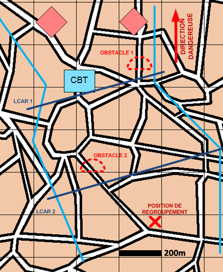

NIVEAU : Automate
ARME : Melee
MISSION : Freiner
NIVEAU : Automate
ARME : Melee
MISSION : Freiner
Schéma de modélisationFreiner |
Paramètres obligatoiresFuseauZone de responsabilité. Direction Dangereuse Orientation privilégiée des capteurs. Ligne(s) de Coup D'Arrêt [LCAR] Ligne à partir de laquelle les unités vont éffectuer le coup d'arret. Position de regroupement Position à rejoindre en fin de mission. Nombre d'échelons (1 par défaut) 1 échelon : adapté aux manoeuvres de l'infanterie ;2 échelons : adapté aux manoeuvres de l'ABC. |
|
Paramètres optionnels |
||
 |
Fiches missions |  |